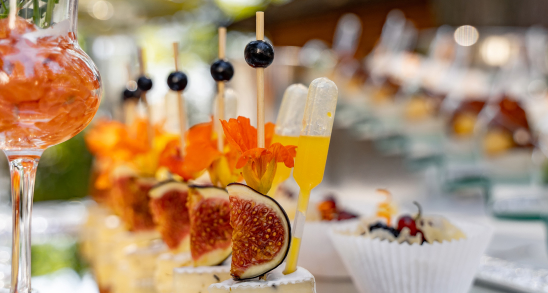
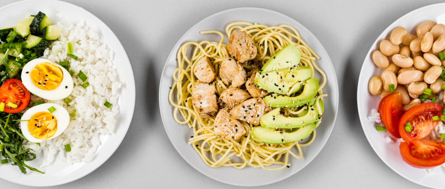
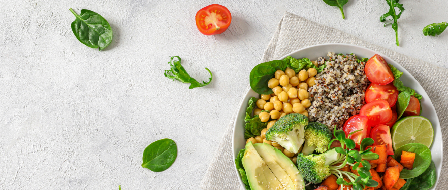

Seasonal Flavors: Incorporating Fresh Produce into Your Event Menu
One of the keys to creating a memorable event menu is harnessing the vibrant flavors of seasonal produce. Whether you're planning a wedding, corporate gathering, or intimate dinner party, incorporating fresh, seasonal ingredients can elevate your menu and delight your guests' palates. Here's how to make the most of seasonal flavors in your event menu:
1. Embrace Local Produce: Start by sourcing locally grown produce from farmers' markets, community-supported agriculture (CSA) programs, or nearby farms. Not only does this support local farmers and reduce your carbon footprint, but it also ensures that your ingredients are at the peak of freshness and flavor.
2. Plan According to the Season: Take advantage of the natural bounty of each season by tailoring your menu to reflect what's fresh and in season. In the spring, think tender asparagus, delicate pea shoots, and vibrant strawberries. In the summer, showcase juicy tomatoes, sweet corn, and fragrant herbs. In the fall, celebrate hearty root vegetables, crisp apples, and earthy mushrooms. And in the winter, embrace hearty greens, citrus fruits, and comforting squash.
3. Highlight Seasonal Specialties: Showcase seasonal specialties in your menu to highlight the unique flavors of each season. For example, feature a refreshing watermelon salad with feta and mint in the summer, a comforting butternut squash soup with apple and sage in the fall, or a decadent blood orange and beet salad with goat cheese in the winter.
4. Get Creative with Flavors and Pairings: Experiment with unexpected flavor combinations and pairings to showcase the versatility of seasonal produce. For example, pair sweet summer peaches with tangy goat cheese and prosciutto for a sophisticated appetizer, or combine roasted Brussels sprouts with crispy pancetta and maple glaze for a savory side dish that's perfect for fall.
5. Offer a Variety of Options: Cater to a range of tastes and dietary preferences by offering a variety of options that incorporate seasonal produce. Include vegetarian, vegan, and gluten-free dishes to accommodate guests with dietary restrictions, and offer a mix of light and hearty options to appeal to different appetites.
6. Incorporate Fresh Herbs and Spices: Enhance the flavors of seasonal produce with fresh herbs and spices that complement their natural sweetness or earthiness. Experiment with aromatic herbs like basil, rosemary, and thyme, or add warmth and depth with spices like cinnamon, ginger, and nutmeg.
7. Highlight Local Cuisine and Traditions: Celebrate the culinary heritage of your region by incorporating local cuisine and traditions into your event menu. Whether it's a New England clam bake, a Southern barbecue feast, or a Mediterranean-inspired mezze platter, infusing your menu with regional flavors adds an authentic touch that resonates with guests.
8. Keep it Fresh and Simple: Let the natural flavors of seasonal produce shine by keeping your preparations simple and letting the ingredients speak for themselves. Whether you're grilling vegetables to bring out their smoky sweetness or tossing them with a light vinaigrette to highlight their freshness, simplicity is often the key to creating a memorable dish.
9. Consider Presentation and Garnishes: Pay attention to presentation and garnishes to enhance the visual appeal of your dishes and create a feast for the eyes as well as the palate. Use vibrant colors, contrasting textures, and artistic plating techniques to showcase the beauty of seasonal produce and make your dishes truly irresistible.
10. Stay Flexible and Adapt to Availability: While it's important to plan your menu around seasonal produce, it's also essential to stay flexible and adapt to changes in availability or quality. Keep an open mind and be willing to make last-minute substitutions or adjustments based on what's freshest and most abundant at the market.
In conclusion, incorporating fresh, seasonal produce into your event menu is a surefire way to create a memorable dining experience that delights guests and celebrates the bounty of nature. By embracing local produce, planning according to the season, and getting creative with flavors and pairings, you can create a menu that reflects the essence of the season and leaves a lasting impression on your guests' taste buds.